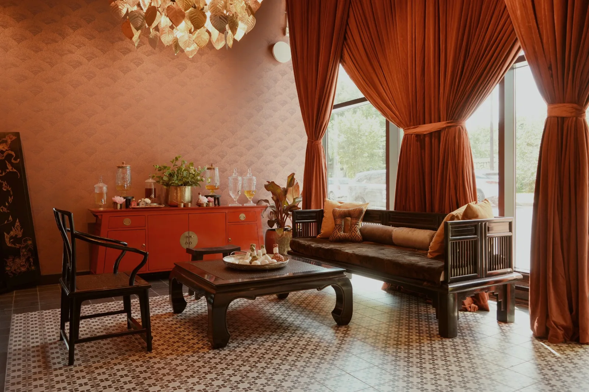
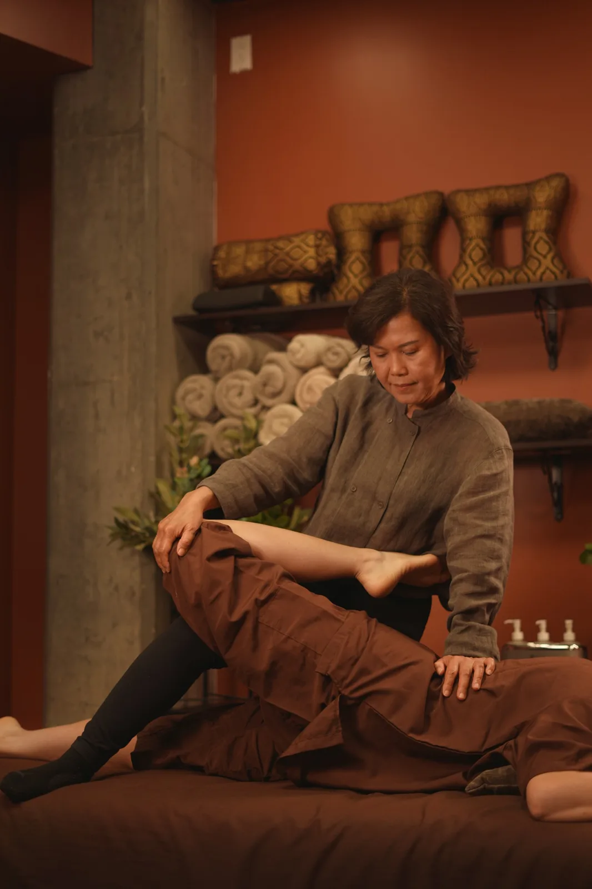
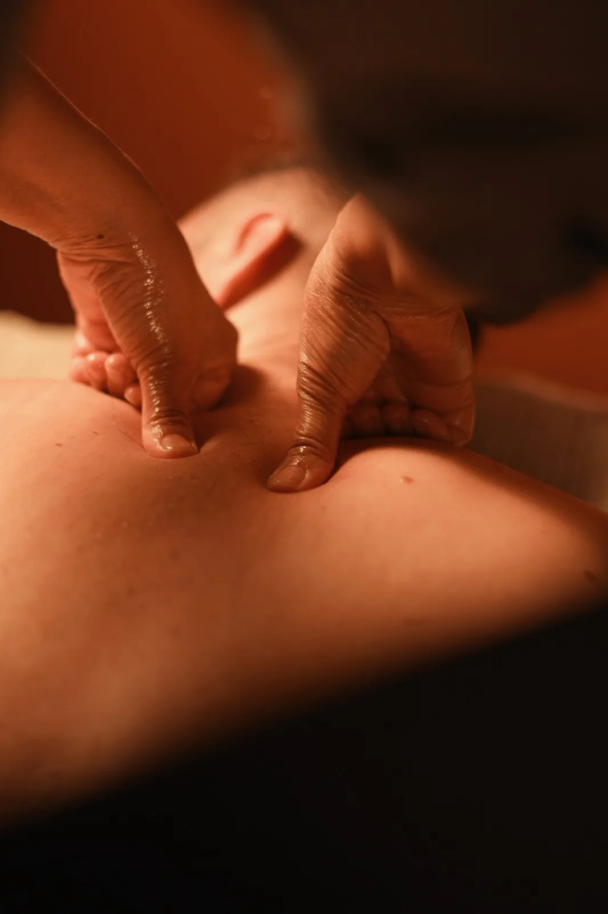
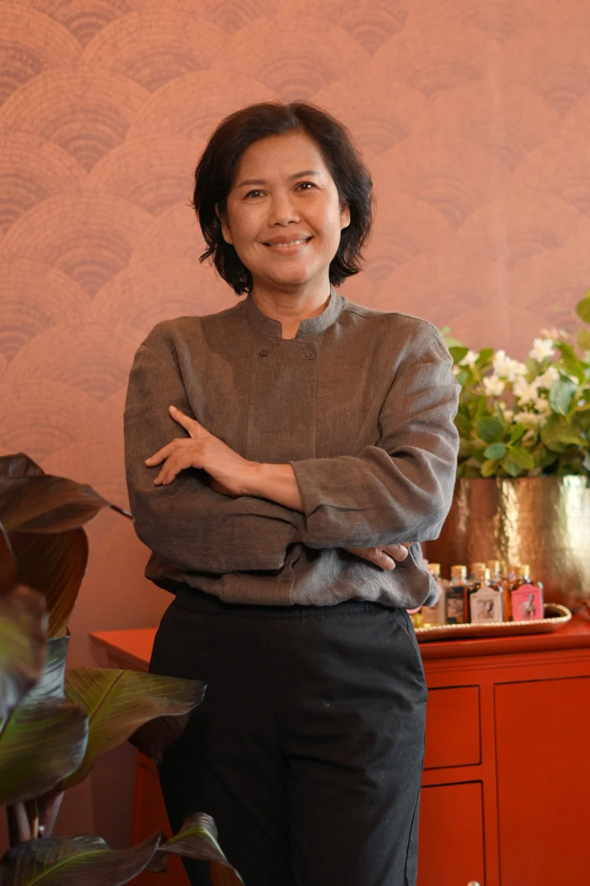

Thai Heritage Bodywork
Traditional Thai massage with pressure and assisted stretching.
DiscoverBook now
Two actions · buttons onlyDigital brand system · V18 · Developer handoff
Modern Thai luxury. Immersive photography, thoughtful hospitality and a seamless booking experience.
Proposed digital guidelines — based on the approved design direction; not a replacement for the official brand assets.
Authentic Thai wellness, refined and contemporary. Use a calm, warm, editorial voice. Prioritize clear booking and package purchase pathways. Avoid exaggerated medical outcomes or undocumented royal lineage. Use Baan d’Or consistently and preserve the official logo artwork.
Ivory
#FBF8F3
Chocolate
#382419
Champagne
#F1D49C
Copper
#965234
Dark bronze
#713C29
Sand
#EEE4D7
Ivory is the base; chocolate is the text and main light-section CTA. Champagne is the primary CTA over photography. Copper is reserved for the announcement strip and selected accents. Sand is a quiet section background.
Manrope: Des rituels d’exception. Un savoir-faire ancestral.
| Role | Specification |
|---|---|
| Hero H1 / promotional H2 | Cormorant Garamond 600; same visual scale, desktop clamp(40.8px, 5.1vw, 74.4px); mobile approximately 38–54px. |
| Section headings / treatment names | Cormorant Garamond 600; 32–53px section titles, 19–27px cards. |
| Body and navigation | Manrope 400–600; body 16px; buttons 600–700. Use Georgia and Arial fallbacks. Self-host licensed fonts if required. |
Booking is the primary action; discovery and promotions are secondary. Use native links for navigation and buttons for dialogs. Fresha booking links open directly in a new tab with rel="noopener noreferrer".
Champagne CTA over dark photography; chocolate text.
Navbar booking is solid chocolate with white text, changing to champagne with chocolate text on hover. No flashing, animated gradient or disappearing label. Use a 250 ms transition, visible keyboard focus and a minimum 44 px touch target. The announcement uses a discreet underlined champagne link, no pill, arrow, border or shadow; center the whole announcement and make its single destination accessible across the bar.
Use original Baan d’Or photography and the official logo. Mix interiors, treatment action and botanical details. Assign distinct hero photographs to navigation pages; retain the approved Treatments hero. No embedded URLs or marketing text.






Hero radius 28 px desktop / 20 px mobile; cards 22 / 16 px. Treatment and package imagery 4:3, therapist portraits 2:3, social gallery 4:5. Nuad Yiab must visibly show the therapist’s feet in action; use a bottom-focused crop. Sri La-Ong Osot requires premium ritual imagery, not a bottle close-up; confirm the image accurately represents the service. Hero carousel: five dots, no arrows or numbers, restrained slow zoom, swipe and pause controls; respect reduced motion.
Near-full-width hero with 10–40 px outer gutter. Navigation: Treatments, Packages, Our Team, Corporate, Products, About Us, Contact Us; booking and language selector. Gift cards in footer. Desktop navigation from 900 px; below that, use the mobile menu.
Traditional Thai massage with pressure and assisted stretching.
Three sessions to extend your wellness experience.
These are visual examples, not live booking links. Production cards: 3 columns desktop, 2 tablet and standard mobile, 1 below 351 px or whenever content cannot fit. Equal heights, aligned prices and CTAs, one concise 8–12 word description, no clipping. Warm diffuse shadows; hover lift up to 4 px and subtle image zoom. Keep touch interactions free of hover traps and layout shifts.
| CTA count | Interaction |
|---|---|
| One | One accessible link covers the entire card; no nested links. Same destination as the CTA. |
| Multiple | Only individual actions are clickable. No card-level redirect. |
| None | Static information; no pointer cursor. |
90 minutes for the price of 60.
Call usA complimentary 90-minute ritual after nine visits.
Learn moreFull-bleed photography, dark readable overlay, equal compact cards side by side on desktop; stack on small mobile. Apply to privileges and featured packages. Confirm offer eligibility and terms before publishing.
Quick view: original photo on top, treatment name and SEO subtitle, identical Experience and Ideal For copy from the detail page (maximum five short bullets), structured duration and price, Book now and View full details. Compact mobile image, scrollable dialog, accessible close control, focus trapping and restoration. Detail page: Experience, Ideal For, durations and prices, privileges and related treatments; booking panel beside content on desktop, stacked on mobile.
Philosophy: five bronze line icons and short value statements. Team: equal portrait cards with individual booking links only. Corporate enquiry opens an accessible overlay connected to a secure endpoint. Social gallery scrolls horizontally on mobile; use Instagram and Facebook only.
The V18 Content Master is the single source of truth for treatments, packages and therapists. Maintain original Fresha names, approved FR/EN names, short and long copy, recommendations, prices, durations, SEO metadata and verified booking links. Proposed therapist biographies require approval. Synchronize quick views and detail pages from the same approved content.
Separate FR/EN indexable pages, one H1, unique titles and meta descriptions, canonical and reciprocal hreflang, descriptive alt text and internal links. Use factual local service information, consistent business details, DaySpa, Service and BreadcrumbList structured data where applicable. Use the supplied 1200 × 630 social image with an absolute production HTTPS URL. Validate Fresha and Google Business Profile consistency. No guaranteed search or AI rankings.
Use responsive WebP images, explicit dimensions, lazy loading below the fold and high priority for the first hero only. Defer noncritical JavaScript, minimize CSS and use WOFF2 where licensed. Avoid booking iframes and layout-shifting animations. Respect reduced motion and keyboard navigation. Targets: LCP ≤ 2.5 s, INP ≤ 200 ms, CLS ≤ 0.1; Lighthouse mobile performance ≥ 90 as a project goal, not a measured result.
| Check | Developer action |
|---|---|
| ☐ | Validate all offer terms, prices and therapist-approved descriptions. |
| ☐ | Connect corporate form to secure endpoint and implement privacy notice. |
| ☐ | Verify four remaining service-specific Fresha destinations and gift-card checkout. |
| ☐ | Map old URLs to final URLs with 301 redirects; update canonical and hreflang. |
| ☐ | Remove staging noindex only after production QA; generate sitemap and robots.txt. |
| ☐ | Connect GA4 and consent management; track Fresha clicks, not unverified purchases. |
| ☐ | Test keyboard, mobile, browser compatibility, image loading and accessibility. |